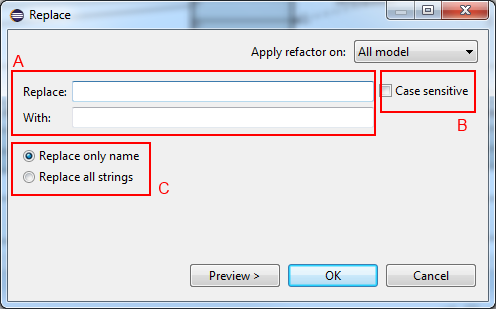

Replace
The replace refactoring permits to replace all occurrences of a string by another string.
The following image illustrates the Replace refactoring dialog.

- In the A area the user indicates the string to be replaced and the new string which should replace the old.
- In the B area the user indicates if the refactoring should consider the case when it finds the old string.
- In the C area the user indicates if the wants to replace only name or all strings.